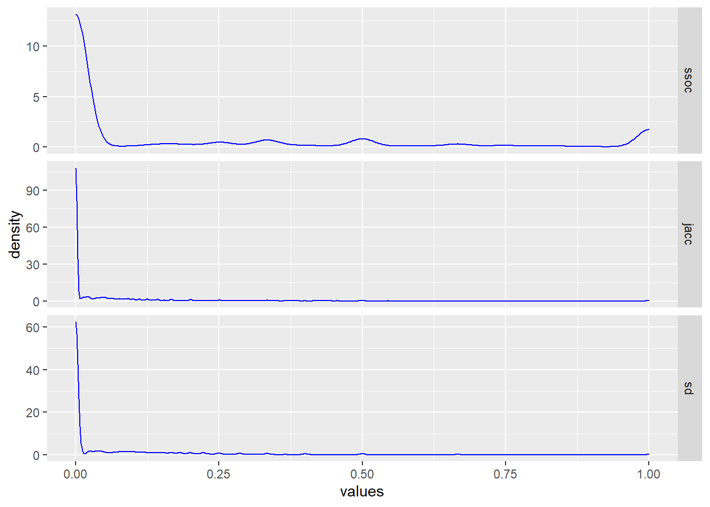

require(tidyverse)
require(igraph)
require(ggraph)
# Read in edgelist into data frame
dat <- read_csv("Catalog_SiteA.csv",
col_select = c(LEVEL_ID, CODE))
# Create graph
g_assemblages_bpg <-
graph_from_data_frame(unique.data.frame(dat),
directed = FALSE)
# Assign bipartite node types
V(g_assemblages_bpg)$type <-
bipartite_mapping(g_assemblages_bpg)$typeSimilarity Measures for Graph Adjacency with Sets

In my last installment (Part I), I introduced you to a bit about the process of analyzing an archaeological site with data science. I talked about the frustratingly complex nature of “Old Things in Space” and how the network of artifacts and locations constitute a bipartite graph.
As we worked through the process of creating a two-mode graph and projecting it into its constituent one-mode graphs, however, we ended on something of a cliff-hanger… everything ended up connected to everything else!
Well, sort of. I have to confess that I intentionally lead you down a primrose path straight into a cul-de-sac. All part of my cunning plan, of course, to get to the much more interesting topic of thinking about just what it means for two things to be “similar” and similarity metrics for sets.
In my defense, I did briefly mention that igraph doesn’t really have the best of tools to actually do much of anything interesting with bipartite graphs. The problem is that the method it uses in its bipartite_projection simply sums the pairwise occurrences in the incidence matrix. That, as it turns out, is less than useful in a lot of cases.
Instead, we need to explore some more robust methods for evaluating similarity between sets. Unlike numerical methods of calculating correlation or distance, there are some conceptual peculiarities when comparing correspondence and similarity between sets that need to be considered. In this article, we’ll look at some of the most commonly used set-based similarity metrics and reason through how to choose the appropriate metric for our goals.
For those just joining in, this is the Part II of a series in archaeological data science covering:
Part I – Creating and exploring bipartite and one-mode graphs,
Part II – Similarity measures for sets and graph adjacency,
Part III – Graph structure and community detection methods,
Part IV – Geo-spatial networks
I’ll continue using R for the coding, but again all of this could be done with Python just as easily.
Introduction
Before we get into the weeds of metrics, methods, and combinatorics (i.e., the mathematics of sets) let’s stop to think for a moment about just what we mean when we say that two things are similar.
In general, we refer to things as similar when they are neither the quite the same nor are they entirely different. Similar things are alike-ish. It means that some measure of shared features or attributes is suggesting association but not necessarily commonality or identity. It denotes a resemblance or correspondence, but there’s a certain fuzziness about it – i.e., similarity implies a subjective or qualitative assessment.
Our goal, then, is twofold. Firstly, we need to determine what set similarity metric most closely reflects the relationship between set elements. Secondly, we have to determine an appropriate method for determining the threshold of similarity between those entities. In other words, we need to choose our criteria for resemblance and set the limits of what is (or isn’t) considered similar between our sets.
In this installment, we’ll be looking at addressing the first goal by exploring some common algorithms for measuring similarity. I’ll discuss the intuitions behind them, their strengths, and the criteria for choosing appropriate metrics. SInce that involves somewhat lengthy discussion, I’ll hold off on talking about thresholds for the next article when we start looking at network structure and community detection.
Sets and Similarity
Unlike real-valued vector spaces in which distance or similarity can be readily calculated, sets consist of an un-ordered collection of unique members or elements. Those member elements can be anything – e.g., numbers, letters, words, objects, categories – so there isn’t always an obvious numerical solution such as vector norms or coordinates that can be used for comparison of elements.
Instead, we have to compare the membership of elements between sets. More specifically, we compare the size or cardinality of certain attributes of or operation on the sets such as their intersections and unions. Luckily, there are numerous metrics available for comparing similarity between sets. For our purposes, I will discuss only a few that are most common:
- Overlap or Szymkiewicz-Simpson coefficient
- Jaccard similarity coefficient (a.k.a. Tanimoto coefficient)
- Sørensen–Dice coefficient
Each of these similarity measures was derived specifically to address the peculiarities of dealing with sets. The difference between them is just the way in which they weight common elements (i.e., intersections) against differences.
It is important to consider, however, exactly what relationships between sets you are trying to capture before choosing a method. If your samples all contain approximately the same number of elements, you might choose differently than if each sample has widely different numbers of members. How likely are complete subsets, and are those important to capture? Are differences more important than commonalities, or the other way around?
As with any data analysis, it’s necessary to explicitly consider your methodology as well as your methods. The rationale and justification for the selection of methods is a critical part of the process. That is, after all, why we call it data science.
Revisiting Bipartite Graphs and Projections
First, lets go back and recreate our bipartite graph of sampling locations (called “proveniences”) and artifact types found at those locations like we did in Part I.
Again, we have our graph of connections between artifact types and locations, and can already see some rough grouping in each of the vertex types (one type at the top and one at the bottom of the plot). The graph is densely connected, with many nodes and edges.
# Plot bipartite graph
g_assemblages_bpg %>%
ggraph(layout = "bipartite") +
geom_edge_link(color = "gray", alpha = 0.25) +
geom_node_point(aes(color = type), size = 2) +
scale_color_manual(
values = c("green", "blue"),
name = "Node Type",
breaks = c(FALSE, TRUE),
labels = c("Provenience", "Artifact")) +
ggtitle("Bipartite network of Provenience and Artifact Type")Now we retrieve the binary incidence matrix of proveniences and artifact types from the graph, which we will use as the data for our similarity measures. Remember, we are only considering presence (1) or absence (0) of an artifact type at each provenience.
g_assemblages_bpg_inc <- as_incidence_matrix(g_assemblages_bpg)
# View the first few rows and columns
g_assemblages_bpg_inc[1:5, 1:15] UDB TOOT CS OCH BNUT UIS TWN UWN MCN UCN CWN BLT CAP SCR TACK
1726 1 1 1 0 1 1 0 1 1 1 1 1 0 1 1
1725 1 1 0 1 0 1 1 0 1 1 0 0 1 0 1
1306 0 0 0 1 0 1 0 1 1 1 1 0 0 0 1
1307 0 0 0 1 0 1 0 0 0 0 1 0 0 0 0
1737 1 0 0 0 1 1 0 0 1 1 1 1 0 1 0Depending on which way we orient our incidence matrix, we now have a collection of the sets of artifact types found at each provenience (by row) or sets of proveniences at which each artifact type was found (by column).
The goal is to find a partitioning of this system of sets such that each subset of provenience contains a coherent collection of artifact types (i.e., what archaeologists call an assemblage) and each subset of artifact types are found together in a coherent spatial collection of proveniences (we call those a context).
What we’re trying to do now is to look at the ways we compute that “coherence” within the projected modes of our bipartite graph. In order to project our bipartite node types into two separate one-mode graphs, we want to evaluate similarity measures between pairwise comparisons of these sets.
Archaeological Objectives
In my last article, I introduced you to a couple archaeological concepts as well as a few concepts about sets and graphs. Now I’d like to pause to explain why we’re so interested in finding these subsets and partitions. You see, archaeologists don’t really interpret artifacts per se.
We’re interested in interpreting human activities across time and space, which gives us a window into far more abstract concepts like behavior or culture. The way we do that, since we don’t have a time machine to go back and observe what people were actually doing, is by looking for patterns of associations between the physical remnants (i.e., the debris or trash) left behind by those activities. Weird, I know, but it works surprisingly well.
Just think for a moment about what your trash might show about your daily behavior!
Anyway, the reason we’re so interested in finding groupings in artifacts (the things) and provenience (the location in 3-dimensional space) is that those are just the samples we collect. We want to know about the populations from which those samples are drawn. In this case, those populations are the assemblages and contexts. We want to see if we can differentiate one assemblage or context from another, then see what patterns that reveals.
For example, does an identified assemblage of artifacts have a specific range of dates so that it uniquely identifies when or how long a site was occupied? Does one assemblage relate to domestic activities while another reflects economic activities, and are those spaces (i.e., their contexts) separate or commingled? If the site was occupied multiple times or by multiple households, were they continuous or intermittent? Different assemblages might be mixed into the same context if they were continuous.
So many questions, but parsing the artifact and provenience data into assemblages and contexts is the first step. We want to be sure that our analytic methods are appropriate.
Similarity Measures for Projections
We found out in Part I that the bipartite_projection method in igraph only sums the number of pairwise coincidences. That means, though, that even one shared element between sets is enough to link them. It doesn’t, at all, factor in how many elements of the sets are different or the total number of elements being considered.
In the end, every node in each projection was linked to almost every other node with no good way to evaluate the strength of those connections. Not particularly useful.
Now we can start looking more closely at set-based similarity measures, and how use them to project our bipartite graph. We could use existing packages for these, but I’d like instead to build our own functions in order to get a better sense of what is going on “under the hood” so to speak.
Do note that these functions are intended for binary incidence matrices. Different approaches would be needed for sets with multiplicities or counts (i.e., multisets or m-sets).
Overlap or Szymkiewicz-Simpson Coefficient
This similarity measure is simply the number of common elements of the intersection between two sets divided by the total number of members in the smaller of the two sets. Remember, the number of unique members or elements that make up a set are its size or (more formally) its cardinality.
\[ Overlap(A, B) = \frac{|A \cap B |}{\min ({|A|,|B|})} \]
For example, say we have two sets: \(X=\{a, b, c\}\) and \(Y = \{b, c, d, e, f\}\). Their intersection is \(X \cap Y = \{b, c\}\) and the sets have cardinality \(|X|=3\) and \(|Y| = 5\). Their overlap coefficient would be:
\[ \begin{aligned} Overlap(X, Y) &= \frac{|\{b, c\}|}{\min(|\{a, b, c\}|, |\{b, c, d, e, f\}|)}\\ &= \frac{2}{\min (3, 5)} \\ &= \frac{2}{3} \approx 0.67 \end{aligned} \]
Easy, right? It’s just the proportion of the smaller set’s members that are also members of the larger set (thus, overlap).
Notice, though, that if all of the elements of the smaller set were in the larger set – i.e., if we were to drop element \(a\) from set \(X\) so that it was a complete subset of \(Y\) – then the coefficient would equal \(1\) regardless of how many additional members were in \(Y\).
So, this similarity measure is defining similarity in a very specific way. It includes an assumption that any subset is effectively equivalent to its superset. That little quirk of definition can be quite useful, depending on your application.
The overlap coefficient is a common set similarity metric used in everything from gene sequencing to topic modeling. It’s also quite easy to calculate across our binary incidence matrix.
# Szymkiewicz-Simpson overlap coefficient for binary incidence matrices
overlap_coef_bin <- function(x) {
# Calculate the pairwise sums of non-zero matrix elements to find the number
# of intersecting elements between each input column
bin_intersect_mat <- t(x) %*% x
# Calculate the input column sums to find the individual size of each set
col_sum <- apply(x, 2, function(xx)
sum(xx != 0))
# Find the smaller of each pair of sets by taking the matrix outer minimum
min_set_size_mat <- outer(col_sum, col_sum, FUN = pmin)
# Szymkiewicz-Simpson overlap coefficient is the pairwise intersection of two
# sets divided by the size of the smaller set
ssoc <- bin_intersect_mat / min_set_size_mat
# Set diagonal to identity
diag(ssoc) <- 1
# Assign input column names to rows and columns of return matrix
dimnames(ssoc) <- list(colnames(x), colnames(x))
return(ssoc)
}Jaccard (or Tanimoto) Similarity Index
The Jaccard index is probably the most well-known and used of the set similarity measures. You may also see this one referenced as the Tanimoto (or even Jaccard-Tanimoto) index, owing to its independent formulation through time in different fields of study. All versions, however, refer to a measure of similarity based on the ratio of cardinality between the intersection of two sets and their union.
\[ J(A, B) = \frac{|A \cap B|}{|A \cup B|} = \frac{|A \cap B|}{|A| + |B| - |A \cap B|} \]
Unlike the overlap coefficient, you can see that the Jaccard index considers the total membership of both sets being compared in the denominator. That means that this index will always penalize differences between sets, even if one is a proper subset of the other.
To demonstrate, let’s go back to our toy example sets \(X=\{a, b, c\}\) and \(Y = \{b, c, d, e, f\}\) to calculate the Jaccard index value.
\[ \begin{aligned} J(X, Y) &= \frac{|\{b, c\}|}{|\{a, b, c\}| + |\{b, c, d, e, f\}| - |\{b, c\}|}\\ &= \frac{2}{3 + 5 - 2} \\ &= \frac{2}{6} \approx 0.33 \end{aligned} \]
By considering the total cardinality of the sets, the Jaccard index comes back a fair bit lower than the Overlap Coefficient (\(\approx 0.67\)). Next, let’s go ahead and drop element \(a\) to make \(X\) a proper subset of \(Y\) and see what happens. Whereas the Overlap Coefficient was \(1\), we find that
\[ \begin{aligned} J(X, Y) &= \frac{|\{b, c\}|}{|\{b, c\}| + |\{b, c, d, e, f\}| - |\{b, c\}|}\\ &= \frac{2}{2 + 5 - 2} \\ &= \frac{2}{5} = 0.4 \end{aligned} \]
That’s a significant difference! Even though \(X\) is a proper subset of \(Y\), the Jaccard index emphasizes the differences between the sets over their commonalities. The greater the disparity between sets, the lower the index value. Again, depending on your use case, that extra penalization of difference may be to your advantage.
The Jaccard similarity index is perhaps, as already mentioned, the most common and versatile of the set similarity measures. It’s often used for comparing categorical data, and frequently found in ecological or social science applications.
Our function to calculate the index is very similar to that for the overlap coefficient, but substituting summation for minimum value in our outer product and changing the denominator.
# Jaccard/Tanimoto similarity index for binary incidence matrices
jaccard_sim_bin <- function(x) {
# Calculate the pairwise sums of non-zero matrix elements to find the number
# of intersecting elements between each input column
bin_intersect_mat <- t(x) %*% x
# Calculate the input column sums to find the individual size of each set
x_col_sum <- apply(x, 2, function(xx)
sum(xx != 0))
# Calculate the matrix outer sums for pairwise sum of set sizes
set_size_sum_mat <- outer(x_col_sum, x_col_sum, FUN = "+")
# Jaccard index is intersection of set sizes over the size of the union of
# sets
jacc <- bin_intersect_mat / (set_size_sum_mat - bin_intersect_mat)
# Set diagonal to identity
diag(jacc) <- 1
# Assign input column names to rows and columns of return matrix
dimnames(jacc) <- list(colnames(x), colnames(x))
return(jacc)
}Sørensen–Dice Similarity Coefficient
Similar to the Jaccard index, the Sørensen–Dice similarity coefficient compares the ratio of the intersection to the total membership of both sets. The difference is that the denominator for Sørensen–Dice is the sum of the cardinalities rather than that of the union of the sets as it is for Jaccard. Another difference is that Sørensen–Dice doubles the intersection in the numerator, which has the effect of “weighting” the commonalities between sets a little bit more than the differences.
\[ DSC(A, B) = \frac{2 \times |A \cap B|}{|A| + |B|} \]
Let’s see how Sørensen–Dice similarity compares with our toy example \(X=\{a, b, c\}\) and \(Y = \{b, c, d, e, f\}\) again.
\[ \begin{aligned} DSC(X, Y) &= \frac{2 \times |\{b, c\}|}{|\{a, b, c\}| + |\{b, c, d, e, f\}|}\\ &= \frac{2 \times 2}{3 + 5} \\ &= \frac{4}{8} = 0.5 \end{aligned} \]
As expected, our calculated similarity \(DSC = 0.5\) is somewhat higher than Jaccard but lower than the Overlap Coefficient. What happens now if we make \(X\) a proper subset of \(Y\) again (i.e., drop element \(a\))?
\[ \begin{aligned} DSC(X, Y) &= \frac{2 \times |\{b, c\}|}{|\{b, c\}| + |\{b, c, d, e, f\}|}\\ &= \frac{2 \times 2}{2 + 5} \\ &= \frac{4}{7} \approx 0.57 \end{aligned} \]
Like Jaccard, the Sørensen–Dice similarity coefficient does not equate a proper subset to identity but does calculate it as a stronger similarity than the Jaccard similarity index. The difference is that while Jaccard is the ratio of intersection to union, Sørensen–Dice is the ratio of the intersection to the disjoint union (i.e., union minus intersection) of the two sets.
Effectively, it’s the ratio of matches to mismatches rather than Jaccard’s ratio of matches to the overall membership. As before, this may be better suited depending on your particular application.
The setup for the function for our binary incidence matrix should be familiar by now.
# Sørensen–Dice Coefficient for binary incidence matrices
soren_dice_sim_bin <- function(x) {
# Calculate the pairwise sums of non-zero matrix elements to find the number
# of intersecting elements between each input column
bin_intersect_mat <- t(x) %*% x
# Calculate the input column sums, to find the individual size of each set
col_sum <- apply(x, 2, function(xx)
sum(xx != 0))
# Calculate the matrix outer sums for pairwise sum of set sizes
set_size_sum_mat <- outer(col_sum, col_sum, FUN = "+")
# Sorenson-Dice index is twice the size of the intersection divided by the
# sum of the size for each set
sd <- (2 * bin_intersect_mat) / set_size_sum_mat
# Set diagonal to identity
diag(sd) <- 1
# Assign input column names to rows and columns of return matrix
dimnames(sd) <- list(colnames(x), colnames(x))
return(sd)
}Choosing Similarity
We now have three very specific ways to measure similarity, so how do we choose which measure to use? Well, there’s no “one size fits all” answer so we have to decide what we mean by “similarity” for our particular scenario.
We have to think through our data-generating processes, and decide what we sort of similarities we are trying to capture depending on what we believe to be the inherent structuring. More importantly, we need to justify that decision from the data.
Revisiting the Data Distributions
Recall from Part I that when we looked at the degree and edge-weight distributions, for both provenience and artifact type, that we have high-density connections formed by relatively low-strength edges. We’re looking at similarity measures to rectify that, but just how “sparse” do we want to make our one-mode projections? Which method is most likely to reveal if there is real structure to our data, and which might inadvertently obscure connections?
When looking at the various similarity metrics and their intuitions, we found that the relative weighting of commonalities to differences made a significant difference. The cardinality involved for each calculation, though, is fully dependent on how many members are likely to be in each sample. That also implies that diversity in sample sizes will effect our similarity measures. Let’s see what those look like.
require(gridExtra)
grid.arrange(
ggplot(
data = data.frame(x = rowSums(g_assemblages_bpg_inc)),
aes(x = x)) +
geom_histogram(color = "gray", fill = "green", bins = 20) +
ggtitle("Artifact Types per Provenience"),
ggplot(
data = data.frame(x = colSums(g_assemblages_bpg_inc)),
aes(x = x)) +
geom_histogram(color = "gray", fill = "blue", bins = 20) +
ggtitle("Occurence per Artifact Type"),
ncol = 2
)On the left, we have the density distribution of how many artifact types tend to be found within a single provenience. On the right, we have the number of proveniences in which any single artifact type is found.
One thing immediately jumps out – a substantial proportion of our proveniences contain a rather diverse collection of artifact types, but most of those individual types are found in very few proveniences. It’s also worth noting that it seems that some artifact types are showing up in a very high proportion of proveniences. Remember, our sample contains only 152 proveniences and 251 unique artifact types at our site.
Both distributions are right-skewed, though, which is promising for our attempt to find hidden network structure. Why? Well, it means that all of those values on the right-hand tails aren’t especially likely to be particularly informative. That skew is much more prominent in the artifact types. Provenience, on the other hand, is somewhat less skewed, which suggests less discrete spatial structure overall.
An artifact type that shows up everywhere tells us very little about the associations between other artifact types, and next to nothing about the differences or similarities between proveniences. Similarly, proveniences that contain a little bit of everything don’t help us in finding spatial distinctions and are quite likely locations in which different assemblages may be mixed together.
Not to say they’re unimportant, and we can link them back in once we’ve found the primary structures for further analysis, but for now they are uninformative. The inherent structure that we’re looking for isn’t likely to be found in those samples. Luckily, we now know that the bulk of the samples should (when projected as one-mode graphs) have a much smaller graph node degree than what we found in our “everything-to-everything” projections from before.
Comparing Similarity Measures
With our sample distributions in mind, we can turn to reasoning through a choice of similarity measures. From our three methods discussed above, the things we want to consider are:
How likely and important are proper subsets to our objectives?
How strongly do we want to weight the intersections of sets?
How strongly do we want to penalize the differences?
We also, of course, do want to consider just what our selected measures look like with our data sample and what implications that has for its graph structure. We’ll orient our incidence matrix g_assemblages_bpg_inc to capture the appropriate dimension (provenience or artifact type), and pass it to our similarity functions.
Each of these represents a potential weighted adjacency matrix for our one-mode graph projections. For comparison purposes, we’ll pull out the lower triangle of each of these square matrices (excluding the self-to-self diagonal, which will be all ones).
First, let’s take a look at our three similarity measures for the provenience dimension.
# Overlap coefficient, provenience
prov_adj_ssoc <- overlap_coef_bin(t(g_assemblages_bpg_inc))
prov_ssoc_vals <-
prov_adj_ssoc[lower.tri(prov_adj_ssoc, diag = FALSE)]
# Jaccard, provenience
prov_adj_jacc <- jaccard_sim_bin(t(g_assemblages_bpg_inc))
prov_jacc_vals <-
prov_adj_jacc[lower.tri(prov_adj_jacc, diag = FALSE)]
# Sorenson-Dice
prov_adj_sd <- soren_dice_sim_bin(t(g_assemblages_bpg_inc))
prov_sd_vals <-
prov_adj_sd[lower.tri(prov_adj_sd, diag = FALSE)]
# Make data frame to compare
prov_sims <-
data.frame(ssoc = prov_ssoc_vals,
jacc = prov_jacc_vals,
sd = prov_sd_vals)Now, we’ll stack our lists of values into a data frame and plot the density profiles of the resulting similarity values for each method.
# Plot densities by similarity measure
prov_sims %>% stack() %>%
ggplot(aes(x = values)) +
geom_density(color = "green",
alpha = 0.4) +
facet_grid(ind ~ ., scales = "free")It’s easy to see how the different similarity measures follow the intuitions about sets that we discussed earlier.
The overlap coefficient (ssoc top row) is almost looking for subsets, so nearly half of the proveniences are calculated as being 50% (or better) matches. That means that, by set overlap at least, a large proportion of our location samples would be considered more similar than not – and many of them considered identical.
Conversely, the Jaccard similarity index (jacc middle row) computes the majority of those same proveniences as dissimilar. Unlike the overlap coefficient, Jaccard is prioritizing difference over intersection since the union of two sets will always be larger than their intersection unless the sets are identical.
Similarly, the Sørensen–Dice similarity index (sd bottom row) is seen to be weighting the differences betwen our samples more heavily – but only the differences, and not the full cardinality of the joined sets. The density curve is quite similar to Jaccard, but you can see that it’s emphasis on the intersection of sets pushes the similarity values higher towards the 50% mark.
Notice, though, how our provenience data distribution can be seen reflected in the similarity metric profiles. Even though the counts of artifact types per provenience are somewhat right-skewed, a majority of proveniences demonstrate relatively high-cardinality sets. That leads to the curiously multi-modal distribution to our similarity metrics. Larger sets means that it is more likely that there may be at least some intersection between pairs of proveniences. Unfortunately, that increases the likelihood of small but spurious similarities as well.
Next, let’s take a look at the projections of similarity along artifact types.
# Overlap coefficient, artifact types
artifact_adj_ssoc <- overlap_coef_bin(g_assemblages_bpg_inc)
artifact_ssoc_vals <-
artifact_adj_ssoc[lower.tri(artifact_adj_ssoc, diag = FALSE)]
# Jaccard, artifact types
artifact_adj_jacc <- jaccard_sim_bin(g_assemblages_bpg_inc)
artifact_jacc_vals <-
artifact_adj_jacc[lower.tri(artifact_adj_jacc, diag = FALSE)]
#Sorenson-Dice, artifact types
artifact_adj_sd <- soren_dice_sim_bin(g_assemblages_bpg_inc)
artifact_sd_vals <-
artifact_adj_sd[lower.tri(artifact_adj_sd, diag = FALSE)]
# Make data frame to compare
artifact_sims <-
data.frame(ssoc = artifact_ssoc_vals,
jacc = artifact_jacc_vals,
sd = artifact_sd_vals)Again, we’ll stack the similarity values so we can look at their distributions.
# Plot densities by similarity measure
artifact_sims %>% stack() %>%
ggplot(aes(x = values)) +
geom_density(color = "blue",
alpha = 0.4) +
facet_grid(ind ~ ., scales = "free")
These look very different from the density profiles of provenience similarity, but also notice that now there seems to be considerable less difference between similarity measures. Why is that?
Well, because the distribution of the number of proveniences in which each artifact type appears is much more right-skewed than types per provenience. In other words, we’re comparing much smaller sets on average. That makes intersections smaller and less likely to begin with. It also, however, makes any correspondence between sets much more meaningful.
If you look closely, you’ll notice that the differences between our three similarity measure are still visible within that right tail. If we exclude the zero values, we can see that more clearly.
# Plot densities by similarity measure
artifact_sims %>% stack() %>%
filter(values > 0) %>% # Exclude zeroes
ggplot(aes(x = values)) +
geom_density(color = "blue",
alpha = 0.4) +
facet_grid(ind ~ ., scales = "free")When we take that “spike” of zero values away from our density distribution, you can see the same patterns of weighting between the three methods – i.e., overlap looking for subsets, Jaccard for differences, and Sørensen–Dice for proportions between them. Interestingly, all three are also identifying that we do have at least some artifact types with identical patterns of occurrence.
Which to Choose?
I started out by say that the is no easy and obvious answer to that question, and our exploration should have demonstrated a bit of why that is so. Each method highlights a different aspect of the interactions within our data, so the real question is… well… whatever question it us that you are trying to tackle!
Our question (i.e., the archaeological one) is whether there are partitions or sub-graphs represented in the samples that indicate the presence of communities. We want to find out if those communities map to disacrete assemblages and contexts that we can interpret. We do want to capture proper subsets, but we also want to avoid spurious associations.
Of the three methods presented here, which do you think satisfies those constraints?
In graph terms, we’re trying to find out if the data indicates something approximating a scale-free network. These are graphs in which the distribution of degree (i.e., the number of edges connected to a node) approaches a power law curve. If we can find that then odds are very good that we’re looking at a “small world” network, which has very well-defined properties for analysis and community detection.
If not, then we are still left with explicit and empirical evidence that the observed phenomena are products of random processes. We would know the limits of inference regarding this particular site. In other words, we have a proper hypothesis test for what many might assume was a subjective or qualitative assessment.
The Next Steps…
We’re not quite ready to select our similarity metric, unfortunately. We still need to do a little exploration of their effects on the resulting one-mode projected graphs, but by now I imagine you can start seeing where some of them will likely lead. Truth is, any of them could satisfy our criteria to varying degrees. The difference would be in the weight assigned to the connections formed, and those weights will prove to be quite important in our next few steps. Both the filter threshold and some of the community detection methods rely on edge weights.
This is basically where data and science converge. Although there are numerous methods and algorithms that will produce a result, it’s the rationale and justification of the selection of data and approaches that allows us to formulate and test hypotheses. Without that reasoning, we can make data dance and spin in all sorts of ways to get an output that seems legitimate. I’ll do a separate article on the distinctions between methods and methodology a some point, I expect.
Our next task will be to explore the effects of similarity metrics and thresholds on the structure of the resulting one-mode graphs. We’ll talk a bit about scale-free and small world networks, graph analytics in general, and start looking at community detection methods.